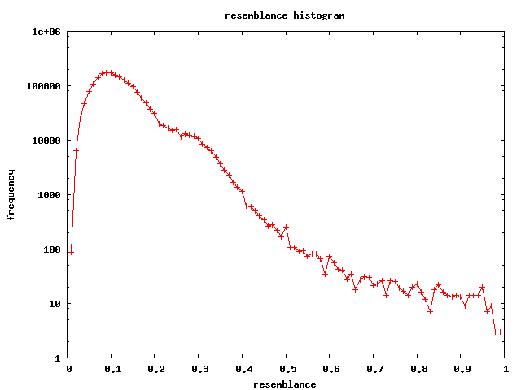

i started working on another rss feed classification technique using a data duplication algorithm to classify articles. the idea is that an article can be classified by determining which class it is most likely a duplicate of. however half way through i realised this technique could work against a problem we were seeing at work and changed to start work on that data instead it's a bit sad i know but data is data and it's still an interesting problem. i'll use nothing but publicly available data for this, and if it looks promising i might get a chance to work on it further during business hours!
all discussed ruby/c++ code is available from http://github.com/matpalm/resemblance
given two very similiar business names, address pairs can we decide if they are actually the same company? let's consider some examples...
eg1 Burra Hotel, 5 Market Sq, Burra, SA, 5417 Camping Country Superstore, 401 Pacific Hwy, Belmont North, NSW, 2280 it's pretty obvious these are not the same company. next!
eg2 One Stop Bakery, 1304 High St Rd, Wantirna, VIC, 3152 One Stop Bakery, 1304 High Street Rd, Wantirna South, VIC, 3152 i think these are the same, it's just one is using an abbrev for street.
eg3 Park Beach Interiors, Showroom Park Beach Plaza Pacific Hwy, Coffs Harbour, NSW, 2450 Park Beach Interiors, Showroom Park Beach Plaza Pacific Highway, Coffs Harbour, NSW, 2450 Park Beach Interiors, Park Beach Plaza Pacific Hwy, Coffs Harbour, NSW, 2450 Park Beach Interiors, 26 Park Beach Plaza, Pacific Hwy, Coffs Harbour, NSW, 2450 i think these are all the same.
eg 4 Weaver Interiors, 955 Pacific Hwy, Pymble, NSW, 2073 Weaver Interiors, 997 Pacific Hwy, Pymble, NSW, 2073 this pair is interesting.... they might be the same, but maybe not...
eg 5 Gibbon Hamor Commercial Interiors, 233 Johnston St, Annandale, NSW, 2038 Gibbon Hamor Development Planners, 233 Johnston St, Annandale, NSW, 2038 this pair is also interesting for the same reasons.
shingling is a way of generating a set that represents a bit of data which can be used for comparisons eg. the 4 bigram shingles of "the cat sat on the cat" are...
the jaccard index is a simple measure of how similiar two sets are. it's simply the ratio of the size of the intersection of the sets and the size of the union of the sets.
eg. if J(A,B) is jaccard index between sets A and B and A = {1,2,3}, B = {2,3,4}, C = {4,5,6}, then J(A,B) = 2/4 = 0.5, and J(A,C) = 0/6 = 0, and J(B,C) = 1/5 = 0.2 so the most "similiar" sets are A and B and the least similiar are A and C (note also J(A,A) = J(B,B) = J(C,C) = 1)
so given two business name/addresses we can build a shingling set for each and use the jaccard index to decide how similiar they are. we'll use bigrams for building our sets but lets use character bigrams, not word bigrams. this is since the documents are quite small and we want to include puncutation in the comparisons...
lets run through our above examples again...
eg 1 Burra Hotel, 5 Market Sq, Burra, SA, 5417 is represented by the set of 2 character-gram shingles {" 5", " B", " H", " M", " S", ", ", "17", "41", "5 ", "54", "A,", "Bu", "Ho", "Ma", "SA", "Sq", "a ", "a,", "ar", "el", "et", "ke", "l,", "ot", "q,", "ra", "rk", "rr", "t ", "te", "ur"}
Camping Country Superstore, 401 Pacific Hwy, Belmont North, NSW, 2280 is represented by the set of 2 character-gram shingles {" 2", " 4", " B", " C", " H", " N", " P", " S", ", ", "01", "1 ", "22", "28", "40", "80", "Be", "Ca", "Co", "Hw", "NS", "No", "Pa", "SW", "Su", "W,", "ac", "am", "c ", "ci", "e,", "el", "er", "fi", "g ", "h,", "ic", "if", "in", "lm", "mo", "mp", "ng", "nt", "on", "or", "ou", "pe", "pi", "re", "rs", "rt", "ry", "st", "t ", "th", "to", "tr", "un", "up", "wy", "y ", "y,"}
they have an intersection size of 6 shingles and a union size of 87 shingles, hence a jaccard index of 6/87 = 0.068
eg 2 One Stop Bakery, 1304 High St Rd, Wantirna, VIC, 3152 and One Stop Bakery, 1304 High Street Rd, Wantirna South, VIC, 3152 have an intersection size of 46 shingles and a union size of 57 shingles, hence a jaccard index of 46/57 = 0.807
eg 3 a) Park Beach Interiors, Showroom Park Beach Plaza Pacific Hwy, Coffs Harbour, NSW, 2450 b) Park Beach Interiors, Showroom Park Beach Plaza Pacific Highway, Coffs Harbour, NSW, 2450 c) Park Beach Interiors, Park Beach Plaza Pacific Hwy, Coffs Harbour, NSW, 2450 d) Park Beach Interiors, 26 Park Beach Plaza, Pacific Hwy, Coffs Harbour, NSW, 2450 have indexes J(ab)=0.888, J(ac)=0.861, J(ad)=0.808, J(bc)=0.760, J(bd)=0.716, J(cd)=0.932
eg 4 Weaver Interiors, 955 Pacific Hwy, Pymble, NSW, 2073 and Weaver Interiors, 997 Pacific Hwy, Pymble, NSW, 2073 have an intersection size of 43 shingles and a union size of 49 shingles, hence a jaccard index of 43/49 = 0.877
eg 5 Gibbon Hamor Commercial Interiors, 233 Johnston St, Annandale, NSW, 2038 and Gibbon Hamor Development Planners, 233 Johnston St, Annandale, NSW, 2038 have an intersection size of 49 shingles and a union size of 76 shingles, hence a jaccard index of 49/76 = 0.644
though there is no obvious magic cutoff point it seems to give pretty good values. it would find some obvious duplicates, though would require a bit of human double checking to make sure.
here's a histogram of the frequency of resemblance values from the comparison of all pairs of 2000 name addresses (a total of 1,999,000 comparisons and notice the y scale is logarithmic) 
the jaccard coefficient is, unfortunately, not transistive (ie if we know J(A,B) and J(B,C) it tells use nothing about J(A,C)
naively then to determine the pair with the highest similarity requires we compare every element with every other element. this is O(n2) and O(n2) sucks since we are looking at (n(n-1))/2 comparisons, joy!
lets examine some of the ruby runtimes
| num records | comparisons | time |
| 50 | 1,225 | 0.2s |
| 100 | 4,950 | 0.9s |
| 250 | 31,125 | 5.6s |
| 500 | 124,750 | 24s |
| 750 | 280,875 | 52s |
| 2000 | 1,999,000 | 6m 57s |
and just say i ran this over a subset of the full data, say, 1,000,000 records it would be 499,999,500,000 comparisons and at about 300,000 per minute we'll be here till christmas (2011)
( luckily the actual data allows me to do something which reduces the runtime to be O(n) but i'm not going to talk about it out of work)
i decided to reimplement this in c++ and go the whole hog by using a bit level representation of the data to wring everything out of the machine.
the big question is: how to optimise the jaccard index calculation? it's where the time is spent.
consider the shingle sets for "cat" and "mat", ie {"ca","at"} and {"ma","at"} we can convert shingles to ints by taking all the unique ones and mapping them to ints from a sequence starting at 0 ie { "ca" => 0, "at" => 1, "ma" => 2} giving us the two equivalent shingle sets {0,1} and {2,1} finally we can use the values in these sets to set bits in a nibble giving us the two nibbles 0011 (setting bits 0 and 1) and 0110 (setting bits 2 and 1)
now consider the bit representations and the results of the bitwise operators | and & 0011 (equivalent to {"ca","at"}) 0110 (equivalent to {"ma","at"}) & 0010 => and'ing the bits strings gives us their intersection! | 0111 => or'ing the bits strings gives us their union!
the number of bits set in x0010 (size of intersection) is 1 and the number of bits set in x0111 (size of union) is 3 so the jaccard index of "cat" and "mat" is 1/3
note: we can count the number of bits set with a crazy bit of c like inline int count_number_bits_set(long l) { unsigned int c; for(c=0;l;c++) l &= l-1; return c; } (thanks to brian kernighan for that one)
using this method we can calculate the union or intersection of a 4 byte long (ie 32 set elements) in a single | or &! bamm!
finally we can use the awesome openmp library ( available as part of gcc since 4.2 ) with two additional lines of code (both pragma statements) we can give hints to the compiler where the code can be multithreaded
| num records | comparisons | ruby time | c++ time | c++ openmp time |
| 50 | 1,225 | 0.29s | 0.008s | 0.013s |
| 100 | 4,950 | 0.97s | 0.01s | 0.013s |
| 250 | 31,125 | 5.5s | 0.04s | 0.04s |
| 500 | 124,750 | 22s | 0.12s | 0.09s |
| 1000 | 499,500 | 1m 30s | 0.37s | 0.2s |
| 2000 | 1,999,000 | 6m 34s | 1.2s | 0.5s |
| 4000 | 7,998,000 | ? | 7.4s | 1.8s |
| 8000 | 31,996,000 | ? | 21s | 6.2s |
| 16000 | 127,992,000 | ? | ? | 26s |
so the ruby code is getting about 5,000 a second the single threaded c++ implementation is getting about 1,500,000 a second and the c++ implementation using openmp on a quad core box (utilising about 350% cpu) is getting about 5,000,000 a second this is a speed up of about 1,000 times booya! that's more like it!
now lets consider the jaccard distance after which we'll consider the simhash algorithm as a way of avoiding all that O(n2) nastiness.
june 11 2009 me on twitter me on google+